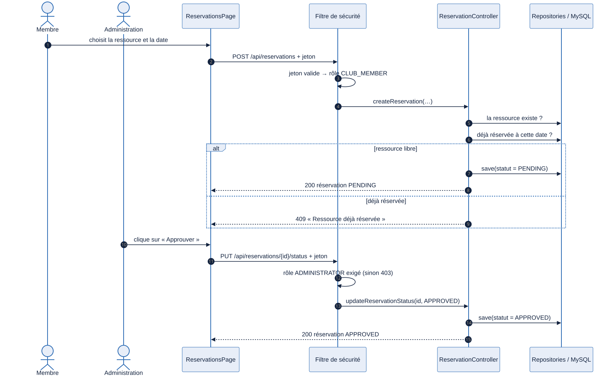
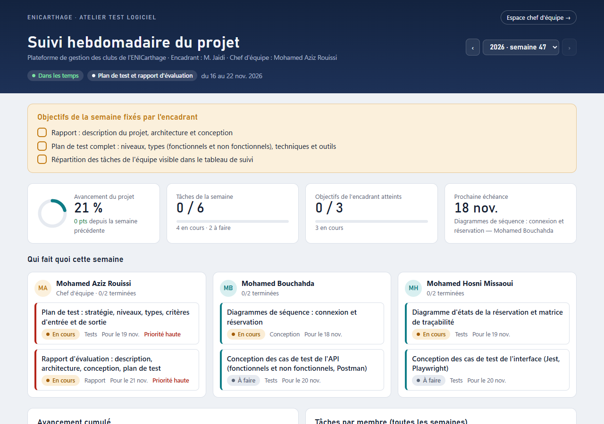

5.1 Cas d'utilisation · 5.2 Diagramme de classes · 5.3 Modèle de données · 5.4 Diagrammes de séquence · 5.5 Diagramme d'états
6. Plan de test
6.1 Objet et périmètre · 6.2 Stratégie · 6.3 Niveaux · 6.4 Types · 6.5 Techniques · 6.6 Cas de test · 6.7 Traçabilité · 6.8 Outils · 6.9 Environnement · 6.10 Critères · 6.11 Anomalies
7. Organisation de l'équipe et planning
8. Conclusion et prochaines étapes
1. Introduction
Ce rapport présente notre projet pour l'atelier de test logiciel : une plateforme web de gestion des clubs de l'ENICarthage. Il décrit le projet, ses besoins, son architecture et sa conception, puis le plan de test qui guidera la campagne de test des prochaines semaines.
Objectif de l'atelier
Traitement dans ce rapport
Chap.
1. Choisir un projet
Plateforme de gestion des clubs (Spring Boot, React, MySQL)
2
2. Présenter les besoins fonctionnels et non fonctionnels
10 exigences fonctionnelles et 10 non fonctionnelles, avec leur criticité
3
3. Utiliser un outil de gestion de test
GitHub : exigences, cas de test et anomalies sous forme d'issues liées ; tableau de suivi hebdomadaire
6.11, 7
4. Élaborer un plan de test
Plan IEEE 829 : niveaux, types (fonctionnels et non fonctionnels), techniques, outils, critères
6
5. Exécuter le plan de test
Planifié pour les semaines 48 à 50 (chapitre 7)
7
2. Présentation du projet
2.1 Contexte et problématique
La vie associative de l'ENICarthage repose sur de nombreux clubs. Leur gestion (création des clubs, organisation des événements, réservation des salles et du matériel, validation par l'administration) se fait aujourd'hui par des échanges dispersés, sans vue d'ensemble ni traçabilité. Une même salle peut être demandée deux fois pour la même date, et l'administration n'a pas de tableau de bord commun.
2.2 Objectifs de la plateforme
Centraliser les clubs, leurs membres et leurs événements dans une seule application web.
Permettre la réservation des salles et des équipements, avec validation par l'administration et sans double réservation.
Donner à chaque profil uniquement les actions qui le concernent.
Offrir à l'administration un tableau de bord de l'activité.
2.3 Profils d'utilisateurs
Profil
Rôle technique
Ce qu'il peut faire
Visiteur
—
S'inscrire (adresse institutionnelle @enicar.tn) et se connecter
Membre de club
CLUB_MEMBER
Consulter les clubs et les événements, réserver une salle ou un équipement, suivre ses réservations, consulter son profil
Président de club
CLUB_PRESIDENT
Tout ce que fait un membre, plus créer et supprimer les événements de son club
Administration
ADMINISTRATOR
Créer les clubs et le compte de leur président, gérer les salles et les équipements, approuver ou rejeter les réservations
2.4 Fonctionnalités par module
Module
Fonctionnalités
Authentification
Inscription, connexion, déconnexion, session conservée dans le navigateur
Tableau de bord
Nombre de clubs, d'événements, de salles et de membres ; événements récents ; clubs actifs
Clubs
Liste ; création d'un club avec le compte de son président ; suppression
Événements
Liste ; création pour son club (salle, date, nombre de participants) ; suppression
Salles et équipements
Liste avec capacité et type ; ajout par l'administration
Réservations
Demande d'un membre ; approbation ou rejet par l'administration
Compte
Profil, paramètres, notifications
3. Analyse des besoins
Chaque exigence a un identifiant unique, repris dans les cas de test pour assurer la traçabilité. La criticité (critique, majeure, mineure) oriente l'effort de test.
3.1 Exigences fonctionnelles
Réf.
Exigence
Description
Criticité
EF-01
Authentification
Connexion par e-mail et mot de passe ; le jeton et le profil sont conservés pendant la session ; déconnexion. En cas d'échec, un message explicite reste affiché.
Critique
EF-02
Inscription d'un étudiant
Un étudiant s'inscrit avec un nom, une adresse institutionnelle @enicar.tn unique et un mot de passe d'au moins 6 caractères ; il reçoit le rôle CLUB_MEMBER (le rôle envoyé par le client est ignoré).
Majeure
EF-03
Rôles et contrôle d'accès
Trois rôles : ADMINISTRATOR, CLUB_PRESIDENT, CLUB_MEMBER. Toute page exige une session. Clubs, salles, équipements et validation des réservations sont réservés à l'administrateur ; la création d'événements au président (pour son club) et à l'administrateur.
Critique
EF-04
Tableau de bord
Statistiques (clubs, événements, salles, membres) et listes récentes calculées à partir des données réelles de la base.
Majeure
EF-05
Gestion des clubs
Consultation par tous. Création par l'administrateur avec création du compte du président (e-mail unique, nom de club obligatoire). Suppression par l'administrateur.
Critique
EF-06
Gestion des événements
Le président crée un événement pour son club : titre, salle existante, date future, participants entre 0 et la capacité de la salle. Statut initial PENDING.
Critique
EF-07
Gestion des salles
L'administrateur ajoute une salle : nom, capacité strictement positive, type AMPHI / SALLE / LABO.
Majeure
EF-08
Gestion des équipements
L'administrateur ajoute un équipement (nom, type) ; statut initial AVAILABLE.
Mineure
EF-09
Réservation de ressources
Un membre réserve une ressource existante (salle ou équipement) à une date. Pas de double réservation d'une ressource à la même date. L'administrateur approuve ou rejette (PENDING → APPROVED / REJECTED).
Critique
EF-10
Profil, paramètres et notifications
Consultation du profil ; paramètres et notifications fonctionnels (pas de données fixes).
Mineure
3.2 Exigences non fonctionnelles
Réf.
Exigence
Catégorie
Description (mesurable)
Criticité
ENF-01
Sécurité des identifiants
Sécurité
Mots de passe hachés (BCrypt). Le hash n'est jamais renvoyé par l'API ni stocké dans le navigateur.
Critique
ENF-02
Sécurité et robustesse de l'API
Sécurité
Jeton vérifié à chaque requête ; non authentifié → 401 ; non autorisé → 403 ; entrée invalide → 4xx, jamais 500.
Critique
ENF-03
Performance
Performance
95 % des requêtes en moins de 500 ms avec 50 utilisateurs simultanés.
Majeure
ENF-04
Utilisabilité et affichage mobile
Utilisabilité
Messages d'erreur visibles ; utilisable sur smartphone 360 px (zone de contenu ≥ 80 % de la largeur, sans défilement horizontal).
Majeure
ENF-05
Compatibilité navigateurs
Compatibilité
Fonctionnement identique sous Edge (Chromium) et Firefox.
Mineure
ENF-06
Maintenabilité
Maintenabilité
0 erreur ESLint ; analyse PMD ; couverture des tests ≥ 70 % des instructions (frontend et backend).
Mineure
ENF-07
Sécurité des dépendances
Sécurité
Aucune vulnérabilité connue de sévérité haute ou critique dans les dépendances de production.
Majeure
ENF-08
Persistance des données
Fiabilité
Les données sont conservées après un redémarrage du backend.
Majeure
ENF-09
Configuration sécurisée
Sécurité
Secrets hors du code source ; CORS limité au frontend ; pas de journalisation SQL en production.
Majeure
ENF-10
Portabilité de la base de données
Portabilité
Fonctionne avec MySQL 8 et avec MariaDB (XAMPP), sans modification du code.
Mineure
3.3 Règles de gestion
Règle
Exigence
Seules les adresses se terminant par @enicar.tn peuvent s'inscrire ; mot de passe d'au moins 6 caractères
EF-02
Un nouvel inscrit reçoit toujours le rôle CLUB_MEMBER, quel que soit le rôle envoyé
EF-02
L'e-mail du président d'un nouveau club ne doit pas déjà exister
EF-05
Un événement a lieu dans une salle existante, à une date future, avec 0 à N participants (N = capacité de la salle)
EF-06
La capacité d'une salle est strictement positive
EF-07
Une ressource ne peut être réservée qu'une fois par date (hors réservations rejetées)
EF-09
Toute réservation commence à PENDING ; seule l'administration la passe à APPROVED ou REJECTED
EF-09
4. Architecture
4.1 Architecture générale
La plateforme suit une architecture en trois couches. Le navigateur exécute une application React (SPA) qui appelle une API REST Spring Boot. L'API applique la sécurité et les règles métier, puis lit et écrit les données dans MySQL par Spring Data JPA.

Figure 1 – Architecture générale en trois couches
4.2 Technologies
Couche
Technologies
Rôle
Présentation
React 19, Vite 8, React Router 7, Axios, Tailwind CSS
Pages, navigation, appels à l'API, affichage responsive
Métier
Java 17, Spring Boot 4, Spring Web MVC, Spring Security, Lombok
API REST, authentification, contrôle d'accès, règles métier
Données
Spring Data JPA, Hibernate 7, MySQL 8 (ou XAMPP)
Persistance, schéma généré par Hibernate
Outillage
Maven, npm, Docker, Git / GitHub
Construction, dépendances, base de données de test, versionnement
4.3 Architecture du backend
backend/src/main/java/com/example/backend/
├── BackendApplication.java démarrage de Spring Boot
├── DataLoader.java données initiales (admin, président, club IEEE, salle, équipements)
├── security/ SecurityConfig, TokenService, TokenAuthenticationFilter authentification et règles d'accès
├── controller/ AuthController, ClubController, EventController, points d'entrée REST
│ RoomController, EquipmentController, ReservationController
├── repository/ UserRepository, ClubRepository, EventRepository, … accès aux données (Spring Data JPA)
├── model/ User, Club, Event, Room, Equipment, Reservation entités JPA
├── dto/ ClubCreationRequest données reçues à la création d'un club
└── web/ ApiError, ApiExceptionHandler erreurs renvoyées au client (400, 404, 409)
Chaque requête traverse le filtre de jetons, puis les règles d'accès de SecurityConfig, avant d'atteindre le contrôleur. Les contrôleurs vérifient les règles métier et renvoient des erreurs explicites (400, 404, 409) plutôt qu'une erreur serveur.
ProtectedRoute redirige vers la page de connexion toute personne non connectée. Les pages affichent ou masquent les actions selon le rôle de l'utilisateur ; l'API applique de nouveau ces règles côté serveur.
4.5 API REST
Méthode
Chemin
Description
Accès
POST
/api/auth/register
Inscription d'un étudiant (rôle CLUB_MEMBER)
Public
POST
/api/auth/login
Connexion : renvoie un jeton et le profil
Public
GET
/api/clubs
Liste des clubs
Public
POST
/api/clubs
Création d'un club et du compte de son président
ADMINISTRATOR
DELETE
/api/clubs/{id}
Suppression d'un club
ADMINISTRATOR
GET
/api/events
Liste des événements
Public
POST
/api/events
Création d'un événement (statut PENDING)
CLUB_PRESIDENT, ADMINISTRATOR
DELETE
/api/events/{id}
Suppression d'un événement
CLUB_PRESIDENT, ADMINISTRATOR
GET
/api/rooms
Liste des salles
Public
POST · DELETE
/api/rooms
Ajout et suppression d'une salle
ADMINISTRATOR
GET
/api/equipment
Liste des équipements
Public
POST · DELETE
/api/equipment
Ajout et suppression d'un équipement
ADMINISTRATOR
GET
/api/reservations
Liste des réservations
Utilisateur connecté
POST
/api/reservations
Demande de réservation d'une salle ou d'un équipement
Utilisateur connecté
PUT
/api/reservations/{id}/status
Approbation ou rejet d'une réservation
ADMINISTRATOR
4.6 Sécurité
Mots de passe : hachés avec BCrypt ; le hash n'est jamais renvoyé par l'API.
Authentification : à la connexion, le serveur délivre un jeton aléatoire de 256 bits ; le client l'envoie dans l'en-tête Authorization: Bearer, et le filtre le vérifie à chaque requête.
Autorisation : règles par rôle dans SecurityConfig ; une requête sans jeton reçoit 401, une requête d'un rôle non autorisé reçoit 403.
CORS : seule l'origine du frontend est autorisée (configurable).
Configuration : identifiants de la base lus dans des variables d'environnement.
4.7 Déploiement

Figure 2 – Diagramme de déploiement (environnement de développement et de test)
5. Conception
5.1 Diagramme de cas d'utilisation
Figure 3 – Diagramme de cas d'utilisation
Description textuelle : « Réserver une salle ou un équipement »
Élément
Description
Acteur principal
Membre de club (le président hérite de ce cas)
Préconditions
Le membre est connecté ; la ressource existe
Scénario nominal
1. Le membre ouvre « Réservations » et clique sur « Nouvelle réservation ». 2. Il choisit le type (salle ou équipement), la ressource et la date. 3. Le système vérifie que la ressource existe et qu'elle est libre à cette date. 4. Le système enregistre la réservation avec le statut PENDING et l'affiche.
Scénarios alternatifs
3a. Ressource déjà réservée à cette date : message « Ressource déjà réservée », rien n'est enregistré. 3b. Ressource inexistante : message d'erreur.
Postcondition
Une réservation PENDING attend la décision de l'administration
Exigences
EF-09, EF-03
5.2 Diagramme de classes
Figure 4 – Diagramme de classes du domaine
Les associations sont portées par des identifiants : un club référence son président (presidentId) et ses membres (members) ; un événement référence son club et sa salle ; une réservation référence son club et la ressource réservée (resourceType + resourceId).
5.3 Modèle de données
Figure 5 – Modèle physique des données (MySQL)
5.4 Diagrammes de séquence
Figure 6 – Diagramme de séquence : connexion

Figure 7 – Diagramme de séquence : réservation par un membre et approbation par l'administration
5.5 Diagramme d'états : réservation
Figure 8 – Cycle de vie d'une réservation
6. Plan de test
Ce plan suit la structure de la norme IEEE 829 / ISO/IEC/IEEE 29119-3. Il couvre les quatre niveaux de test et les types de test fonctionnels et non fonctionnels.
6.1 Objet et périmètre
Dans le périmètre
Hors périmètre
Authentification, inscription, rôles · clubs · événements · salles · équipements · réservations · tableau de bord · profil, paramètres, notifications · sécurité de l'API · performance · robustesse · affichage mobile · compatibilité · maintenabilité · dépendances · persistance · portabilité de la base
Déploiement en production ; envoi d'e-mails (non prévu) ; accessibilité avancée (lecteurs d'écran)
6.2 Stratégie : approche basée sur les risques
Risque produit
Probabilité
Impact
Priorité
Tests prévus
Action d'administration par un utilisateur non autorisé
Élevée
Critique
P1
TI-03, TU-02, TU-04, TNF-06
Fuite des mots de passe
Moyenne
Critique
P1
TI-01, TU-01, TNF-06
Double réservation d'une salle
Moyenne
Majeur
P1
TI-06, TS-05, TA-03
Événement dépassant la capacité d'une salle
Moyenne
Majeur
P1
TI-05, TA-02
Erreur serveur sur une saisie invalide
Moyenne
Moyen
P2
TI-01 à TI-07, TNF-06
Lenteur en période d'inscription
Faible
Majeur
P2
TNF-01, TNF-06
Mauvais affichage sur smartphone
Moyenne
Moyen
P2
TS-07
Dépendances vulnérables
Élevée
Majeur
P2
TNF-02
Perte de données au redémarrage
Faible
Critique
P2
TNF-05
6.3 Niveaux de test (cycle en V)
Figure 9 – Correspondance entre phases de développement et niveaux de test
Niveau
Objectif
Cas
Outil
Unitaire / composant
Vérifier chaque composant isolément (API simulée)
TU-01 … TU-06
Jest + React Testing Library
Intégration
Vérifier l'API avec la sécurité et la base de données réelles
TI-01 … TI-07, TNF-06
Postman, Jest
Système
Vérifier l'application complète dans un navigateur
TS-01 … TS-08, TNF-01
Playwright, k6
Acceptation
Valider le besoin du point de vue de chaque profil
TA-01 … TA-03
Navigateur, fiches de test
6.4 Types de test
Tests fonctionnels — ce que fait l'application
Cas
Objet
Niveau
Exigences
TU-01
Contexte d'authentification
Unitaire
EF-01, EF-02, ENF-01
TU-02
Routes protégées
Unitaire
EF-03
TU-03
Validation des formulaires
Unitaire
EF-05, EF-06, EF-07, EF-09, ENF-04
TU-04
Interface selon le rôle
Unitaire
EF-03, EF-05, EF-06, EF-09
TU-05
Tableau de bord et menus
Unitaire
EF-04, EF-10
TU-06
Connexion, inscription, routage, pages de compte
Unitaire
EF-01, EF-02, EF-10
TI-01
API — connexion
Intégration
EF-01, ENF-01, ENF-02
TI-02
API — inscription
Intégration
EF-02, ENF-02
TI-04
API — clubs
Intégration
EF-05, ENF-02
TI-05
API — événements
Intégration
EF-06
TI-06
API — réservations
Intégration
EF-09, ENF-02
TI-07
API — salles et équipements
Intégration
EF-07, EF-08
TS-01
Authentification de bout en bout
Système
EF-01, EF-03, ENF-04
TS-02
Inscription puis reconnexion
Système
EF-02
TS-03
Création d'un club et de son président
Système
EF-05
TS-04
Création d'un événement par le président
Système
EF-06
TS-05
Réservation par un membre, validation par l'administrateur
Système
EF-09
TS-06
Tableau de bord cohérent avec la base
Système
EF-04
TA-01
Parcours administrateur
Acceptation
EF-05, EF-07, EF-09
TA-02
Parcours président de club
Acceptation
EF-04, EF-06
TA-03
Parcours membre de club
Acceptation
EF-02, EF-03, EF-09
Tests non fonctionnels — comment elle se comporte
Cas
Objet
Caractéristique
Exigences
TI-03
API — contrôle d'accès
Sécurité
EF-03, ENF-02
TS-07
Affichage smartphone 360 × 800
Non fonctionnel (utilisabilité)
ENF-04
TS-08
Compatibilité Edge / Firefox
Non fonctionnel (compatibilité)
ENF-05
TNF-01
Test de charge (50 utilisateurs)
Non fonctionnel (performance)
ENF-03
TNF-02
Audit des dépendances
Non fonctionnel (sécurité)
ENF-07
TNF-05
Persistance après redémarrage
Non fonctionnel (fiabilité)
ENF-08
TNF-06
Postman — performance, sécurité et robustesse de l'API
Non fonctionnel (performance, sécurité, robustesse)
ENF-01, ENF-02, ENF-03, ENF-09
Autres types
Type
Cas
Description
Statique
TNF-03
Revue de code et analyse statique (ESLint, PMD/CPD), sans exécuter le code
Structurel (boîte blanche)
TNF-04
Couverture des instructions et des branches (objectif ≥ 70 %)
Lié aux changements
TR-01, TR-02
Re-test de confirmation après chaque correctif, puis non-régression complète
Maintenance
TM-01
Portage vers MariaDB (XAMPP) sans modification du code
6.5 Techniques de test
Famille
Technique
Application prévue
Statique
Revue des exigences
Reformuler chaque besoin en critère mesurable (ex. ENF-03 : p95 < 500 ms à 50 utilisateurs)
Revue de code
Contrôleurs, sécurité et configuration relus avant toute exécution
Analyse outillée
ESLint, PMD/CPD, npm audit
Boîte noire
Partitions d'équivalence
Identifiants valides ou invalides, adresses @enicar.tn ou non
Valeurs limites
Mot de passe de 5 / 6 caractères ; 40 / 41 participants pour une salle de 40 places ; capacité 0 et −10
Chaque exigence est couverte par au moins un cas de test : 20/20.
6.8 Outils de test
Outil
Utilisation prévue
Niveau
Type
Jest 30 + React Testing Library
Tests unitaires et de composants du frontend (API simulée) ; tests d'intégration de l'API par requêtes HTTP
Unitaire, intégration
Fonctionnel, sécurité
Postman
Logiciel de test d'API : collection en deux parties, A — fonctionnels, B — non fonctionnels (performance, sécurité, robustesse) ; Collection Runner et onglet Performance
Intégration
Fonctionnel et non fonctionnel
Playwright (+ UI Mode)
Tests système dans un vrai navigateur (Edge, Firefox), interface graphique avec chronologie et captures ; aide aux tests d'acceptation
Système, acceptation
Fonctionnel, utilisabilité, compatibilité
k6
Test de charge de l'API (50 utilisateurs virtuels)
Système
Non fonctionnel (performance)
JaCoCo · couverture Jest
Couverture des instructions et des branches
Unitaire, intégration
Structurel
ESLint · PMD/CPD · npm audit
Analyse statique du code et audit des dépendances
—
Statique, maintenabilité, sécurité
GitHub (issues, jalons, Pull Requests, Projects)
Gestion des exigences, des cas de test, des anomalies et des campagnes
—
Gestion des tests
Postman est le logiciel de test retenu pour l'API. Sa collection sera organisée en deux parties : A — tests fonctionnels (un dossier par cas TI-01 à TI-07) et B — tests non fonctionnels (NF-01 performance : temps de réponse < 500 ms ; NF-02 sécurité : accès, jetons, injection SQL, CORS ; NF-03 robustesse : entrées invalides sans erreur 500). Chaque requête porte ses vérifications (pm.test) :
pm.test("Code HTTP 200", () => pm.response.to.have.status(200));
pm.test("Temps de réponse < 500 ms", () => pm.expect(pm.response.responseTime).to.be.below(500));
pm.test("Le hash du mot de passe n'est pas renvoyé", () => pm.expect(pm.response.json().user).to.not.have.property("password"));
6.9 Environnement et données de test
Unitaires : jsdom, API simulée avec les données initiales du projet.
Intégration et système : backend réel sur MySQL 8 (Docker) ; chaque test crée ses propres données pour pouvoir être rejoué.
Acceptation : base réinitialisée ; comptes admin@enicar.tn et ahmed@enicar.tn.
Navigateurs : Microsoft Edge et Firefox, en 1440 × 900 et en 360 × 800 (smartphone).
6.10 Critères d'entrée, de sortie et de suspension
Critère
Définition
Entrée
Application compilée et démarrée ; base de test accessible ; exigences et cas de test publiés sur GitHub
Sortie
100 % des cas exécutés ; aucune anomalie critique ou majeure ouverte ; 100 % des exigences couvertes ; couverture des instructions ≥ 70 % ; p95 < 500 ms
Suspension
Environnement indisponible ou anomalie bloquante empêchant plus de 30 % des tests
Reprise
Correctif livré ; re-test de confirmation puis non-régression complète
6.11 Gestion des anomalies et des tests
Cycle de vie d'une anomalie : Détectée → Confirmée → Corrigée → Re-testée → Fermée. Gravité : critique (sécurité, perte de données), majeure (fonction dégradée), mineure (gêne). Sur GitHub, chaque exigence, chaque cas de test et chaque anomalie est une issue ; une anomalie est liée à l'exigence concernée et au test qui l'a détectée, et la Pull Request qui la corrige la ferme. Les jalons représentent les campagnes de test.
7. Organisation de l'équipe et planning
7.1 Rôles
Membre
Rôle
Domaine principal
Mohamed Aziz Rouissi
Chef d'équipe
Exigences, architecture, plan de test, coordination, rapport
Mohamed Bouchahda
Membre
Backend et API : diagramme de classes, séquences, tests d'API (Postman), tests non fonctionnels
Mohamed Hosni Missaoui
Membre
Frontend : cas d'utilisation, diagramme d'états, tests unitaires (Jest), tests système (Playwright)
7.2 Répartition des tâches et planning
Semaine
Phase
Tâche
Responsable
Échéance
Statut
S46 à partir du 9 nov. 2026
Analyse et conception
Cadrage du projet et rédaction des exigences (EF / ENF)
Mohamed Aziz Rouissi
11 nov. 2026
Terminée
Diagramme de cas d'utilisation et parcours des trois profils
Mohamed Hosni Missaoui
12 nov. 2026
Terminée
Diagramme de classes et modèle de données
Mohamed Bouchahda
13 nov. 2026
Terminée
Architecture technique et diagramme de déploiement
Mohamed Aziz Rouissi
14 nov. 2026
Terminée
S47 à partir du 16 nov. 2026
Plan de test et rapport d'évaluation
Diagrammes de séquence : connexion et réservation
Mohamed Bouchahda
18 nov. 2026
En cours
Plan de test : stratégie, niveaux, types, critères d'entrée et de sortie
Mohamed Aziz Rouissi
19 nov. 2026
En cours
Diagramme d'états de la réservation et matrice de traçabilité
Mohamed Hosni Missaoui
19 nov. 2026
En cours
Conception des cas de test de l'API (fonctionnels et non fonctionnels, Postman)
Mohamed Bouchahda
20 nov. 2026
À faire
Conception des cas de test de l'interface (Jest, Playwright)
Mohamed Hosni Missaoui
20 nov. 2026
À faire
Rapport d'évaluation : description, architecture, conception, plan de test
Mohamed Aziz Rouissi
21 nov. 2026
En cours
S48
Tests unitaires et d'intégration
Environnement de test (Docker, données) et suivi des anomalies sur GitHub
Mohamed Aziz Rouissi
25 nov. 2026
À faire
Tests unitaires et de composants (Jest)
Mohamed Hosni Missaoui
27 nov. 2026
À faire
Tests d'intégration de l'API (Postman, Jest)
Mohamed Bouchahda
27 nov. 2026
À faire
S49
Tests système, non fonctionnels et acceptation
Tests système E2E (Playwright, Edge et Firefox)
Mohamed Hosni Missaoui
4 déc. 2026
À faire
Tests non fonctionnels : performance, sécurité, robustesse
Mohamed Bouchahda
4 déc. 2026
À faire
Tests d'acceptation avec les trois profils
Mohamed Aziz Rouissi
5 déc. 2026
À faire
S50
Correctifs, non-régression et rapport final
Correctifs backend et re-test
Mohamed Bouchahda
10 déc. 2026
À faire
Correctifs frontend et non-régression
Mohamed Hosni Missaoui
10 déc. 2026
À faire
Bilan, verdict de recette et rapport final
Mohamed Aziz Rouissi
12 déc. 2026
À faire
7.3 Suivi hebdomadaire
L'avancement est suivi chaque semaine dans un tableau de bord tenu dans le dépôt (suivi/index.html). Il affiche les objectifs fixés par l'encadrant, les tâches de chaque membre (priorité, échéance, statut) et le planning complet. Le chef d'équipe met à jour la semaine depuis son espace (suivi/chef.html).

Figure 10 – Tableau de suivi hebdomadaire : objectifs de l'encadrant et tâches de chaque membre (semaine 47)
8. Conclusion et prochaines étapes
Ce rapport décrit la plateforme de gestion des clubs de l'ENICarthage : ses profils et ses fonctionnalités, ses 20 exigences, son architecture en trois couches et sa conception (cas d'utilisation, classes, données, séquences, états). Il fixe le plan de test qui guidera la suite : 33 cas de test répartis sur les quatre niveaux, tests fonctionnels et non fonctionnels, techniques de conception des tests, outils (Jest, Postman, Playwright, k6) et critères de sortie.
Prochaines étapes : semaine 48, tests unitaires (Jest) et tests d'intégration de l'API (Postman) ; semaine 49, tests système (Playwright), tests non fonctionnels et tests d'acceptation ; semaine 50, correctifs, non-régression et rapport final avec le verdict de recette.